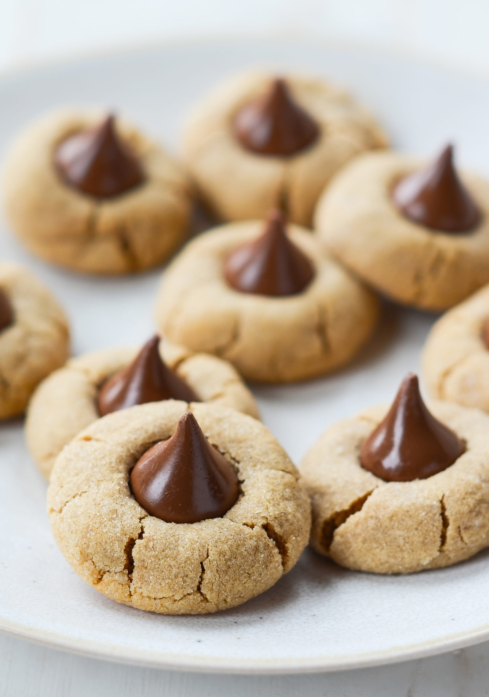

Peanut Blossoms

Description
Peanut Blossoms are cookies made with peanut butter and they have a kiss in the middle.
Ingredients
- 1 cup shortening
- 1 cup peanut butter
- 1 cup packed brown sugar
- 1 cup white sugar
- 2 eggs
- 1/4 cup milk
- 2 teaspoons vanilla extract
- 3 1/2 cups all-purpose flour
- 2 teaspoons baking soda
- 1 teaspoon salt
- 1/2 cup white sugar
- 2 bags kisses candy
Directions
- Preheat oven to 375 degrees F
- In a large bowl, cream together the shortening, peanut butter, brown sugar, and 1 cup white sugar until smooth. Beat in the eggs one at a time, and stir in the milk and vanilla. Combine the flour, baking soda, and salt; stir into the peanut butter mixture until well blended. Shape tablespoonfuls of dough into balls, and roll in remaining white sugar. Place cookies 2 inches apart on the prepared cookie sheets.
- Bake for 10 to12 minutes in the preheated oven. Remove from oven, and immediately press a chocolate kiss into each cookie. Allow to cool completely; the kiss will harden as it cools.